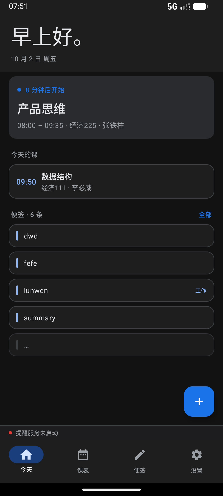
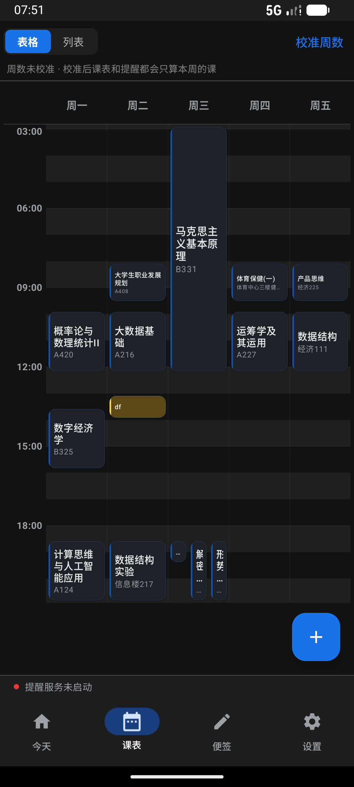
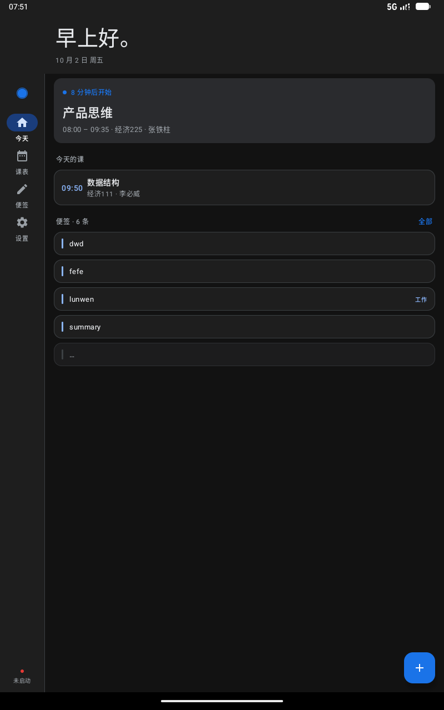
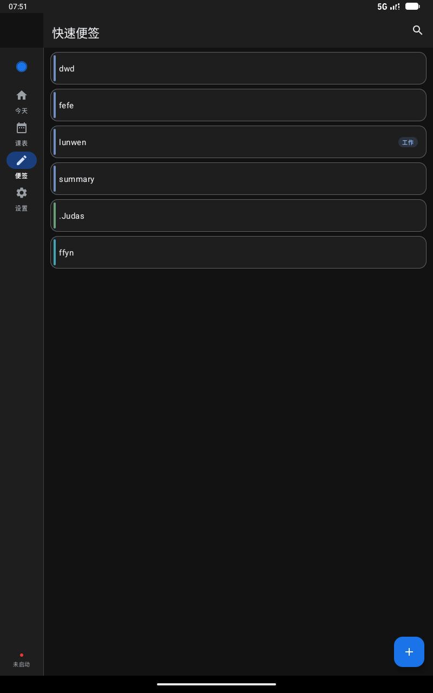
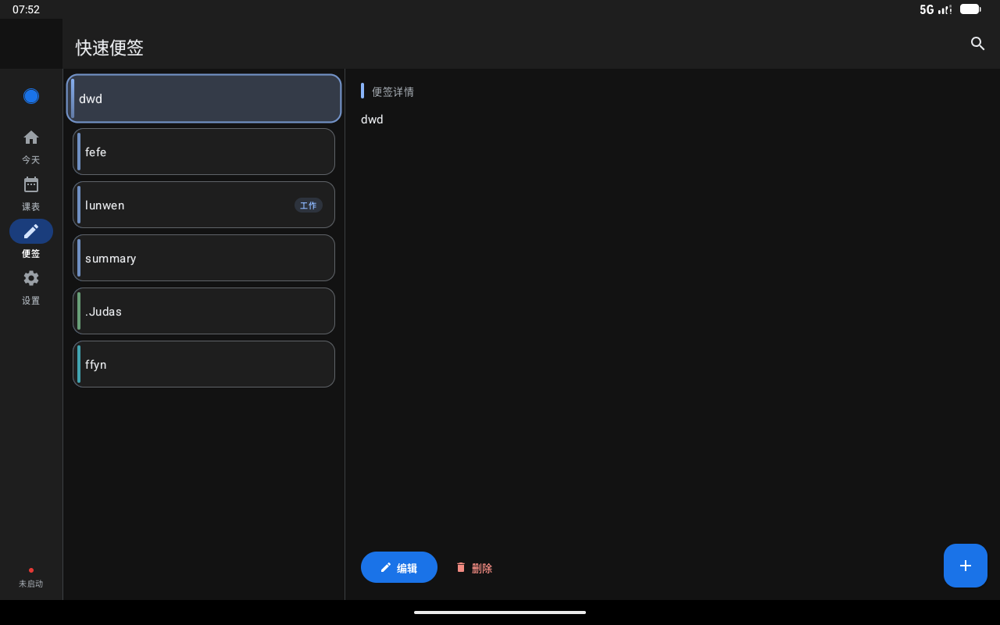
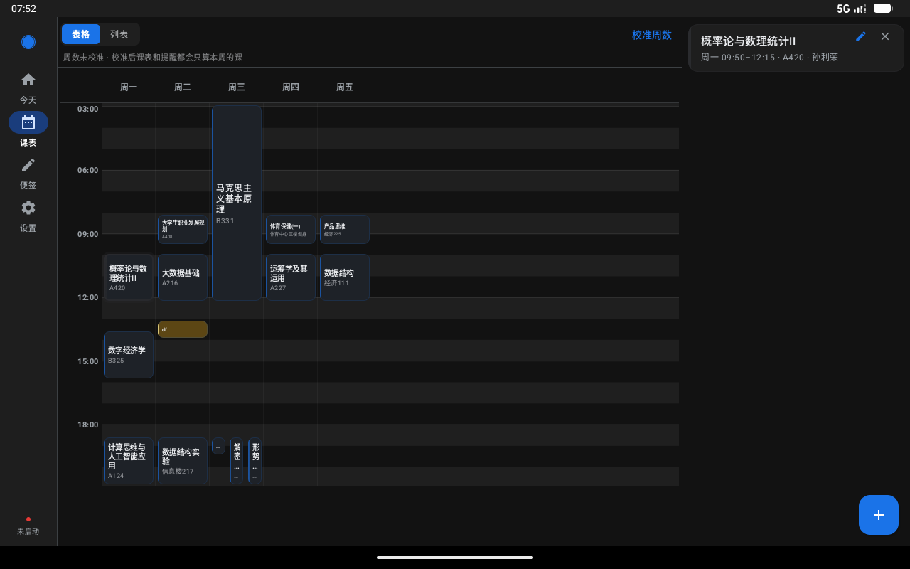
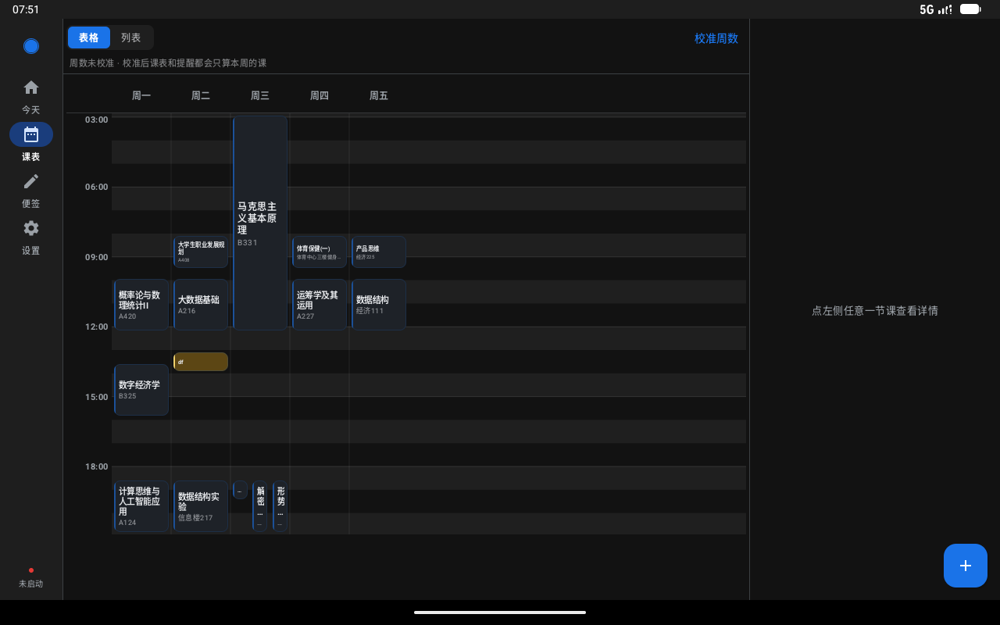
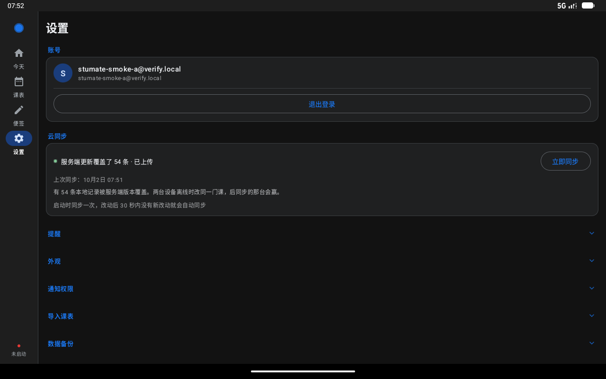

起因：评估「桌面端那套方案能否快速迁到平板端」。结论是不能迁移、但能快速适配 ——
因为两端本来就是**平行实现**，安卓端已有等价的全部业务逻辑（data 1787 行 /
sync 1700 行，与桌面端 2033 / 1865 行一一对应）。
真正缺的只有一层响应式壳。
本页是那层壳的实机验收。
| 宽度 | 形态 | 对应设备 |
|---|---|---|
< 600dp |
单栏 + 底部导航栏（原样不动） | 手机竖屏 411dp |
600 – 899dp |
左侧导航栏 + 单栏内容 | 平板竖屏 800dp、手机横屏 |
900 – 1199dp |
侧栏 + 便签页开双栏（列表 + 详情） | 平板横屏 1280dp 以下 |
≥ 1200dp |
侧栏 + 便签与课表都开双栏 | 平板横屏 1280dp |
为什么课表的断点比便签高？课表是七列：双栏要额外切掉侧栏 80dp + 详情栏 320dp， 剩下的再除以 7 才是单格宽度。900dp 时只剩 71dp/格，课程名被截成一两个字； 1200dp 时有 114dp/格，与手机竖屏单格相当。两个断点不一样是刻意的，不是漏改。
判定用的是 LocalConfiguration.screenWidthDp，不是 BoxWithConstraints ——
后者是 SubcomposeLayout，包住整个主界面等于每次尺寸变化都要重排整棵树；
而这里只想知道窗口多宽，Configuration 直接就给。多窗口 / 分屏下它反映的正是本应用窗口的宽度。


这组图是本次改动「零回归」的证据：窄屏时那层 Row 只有一个孩子， 不是靠调参对齐，而是根本不参与布局。






没有新建平板 AVD —— 唯一的系统镜像已装在手机 AVD 上，而 AVD 目录 6.6 GB，
只为改两行 LCD 配置复制一份太重。改用 wm size / wm density
改**逻辑**尺寸与密度：应用读到的 screenWidthDp 就是我们要验的那个值，
对「断点有没有生效」这个目的完全等价。
# 统一 density=160 → 1px = 1dp，尺寸直接就是 dp，不用心算 adb shell wm size 800x1280; adb shell wm density 160 # 平板竖屏 adb shell wm size 1280x800; adb shell wm density 160 # 平板横屏 adb shell wm size reset; adb shell wm density reset # 收尾复位 # 新增 tools/shoot_tablet.py：三形态 × 四页面共 14 张，自动切形态 / 点 Tab / 截图
截图脚本里两个「假阴性」防线（都是这次真踩到的）：
① 导航项不能只按 content-desc 找 —— NavigationBarItem /
NavigationRailItem 会把子节点语义合并上来，图标上的 contentDescription
被 label 的 text 覆盖，按 desc 一个都找不到。必须 text / desc 都看。
② 按文字点课程块时要排除时间轴刻度（06:00 / 09:00…）——
它们是网格里最靠左最靠上的文字节点，按「第一个非骨架文字」去点必然先撞上，
而刻度不可点，于是又变成「点了没反应」。
③ 收尾断言同形态下各图字节数必须互不相同，相同就是根本没变过。
| # | 症状 | 根因 / 修法 |
|---|---|---|
| 1 | 右半屏一片空白，状态点跑到屏幕正中 |
侧栏外层 Column 没约束宽度，而底部状态脚注用了 fillMaxWidth() ——
Column 宽度取「最宽的孩子」，于是被撑到整屏宽，同级的 1dp 分隔线被推出屏幕、
内容区（weight(1f)）被挤成 0 宽。修法：显式给侧栏 width(NAV_RAIL_WIDTH)（80dp，与 M3 的
NavigationRail 固定宽度一致）。
|
| 2 | 宽屏下顶栏标题停在最左边，和下方内容左边缘对不齐 |
顶栏横跨整屏（含侧栏上方）。 修法：宽屏时给顶栏内容加 start = NAV_RAIL_WIDTH 的内边距。
背景不跟着让 —— padding 加在 .background() 之后，
否则侧栏上方会缺一块、出现色块断层。
|
另外顺手补了一个既有的漏传：MainScreen 调 WeekView 时
没传 experimentalGrid，于是设置页那个「实验性：时间轴网格课表」开关
要重启才生效。加一个实参即可。
compileDebugKotlin BUILD SUCCESSFUL testDebugUnitTest 153 / 153 通过，0 失败 0 跳过 assembleDebug BUILD SUCCESSFUL 实机三形态 × 四页面 14 张截图，同形态内字节数互不相同 全部 OK
Prefs.getLastTab），
但滚动位置不保留。要不要保，取决于实际手感。screenWidthDp 判定，理论上自动生效，
但没有实机验证过。